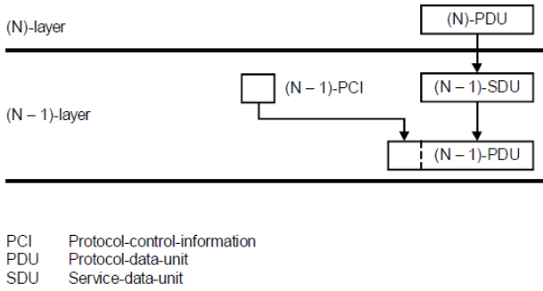
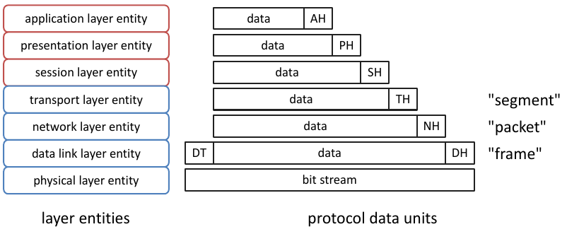
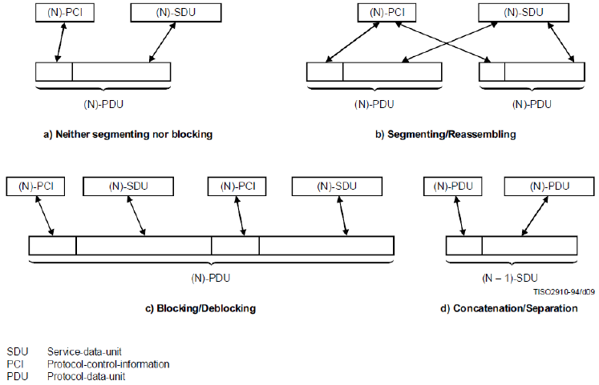
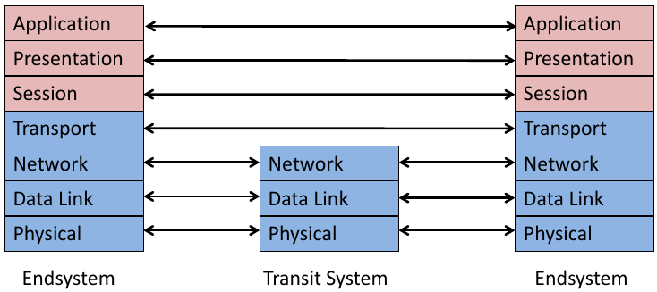
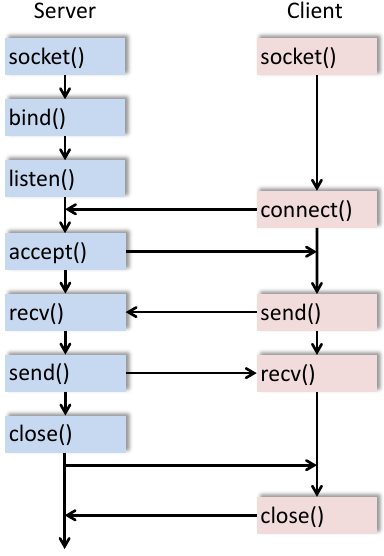

Das ISO/OSI Referenzmodell ist ein weltweit akzeptiertes (Referenz-)modell für Kommunikationssysteme. Es stellt eine gemeinsame Basis für die Entwicklung von Standards dar.
Prinzipien des OSI Referenzmodells
Eine Schicht:
Eine Instanz:

Figure 1: Sukzessive Verschachtelung von protocol-data-units in den Schichten des OSI Modells

Figure 2: OSI Layer Data Units
Arten der Verbindung/Aufteilung von SDUs zu PDUs:

Figure 3: Verbindung/Aufteilung von SDUs zu PDUs
Ein Protokoll legt den Ablauf der Kommunikation zwischen zwei peer-Instanzen (dieselben Instanzen derselben Schicht, auf unterschiedlichen Systemen) fest. Ein Protokoll bildet somit eine logische Verbindung zwischen zwei Instanzen derselben Schicht.
Merksatz: Please do not throw salami pizza away
| Nr | Schicht | bereitgestellter Dienst | Einheiten (PDUs) | Protokolle (Entitäten) |
|---|---|---|---|---|
| 7 | Application Layer | anwendungsspezifische Dienste | HTTP, FTP, SMTP, DNS | |
| 6 | Presentation Layer | systemunabhängige, korrekte Darstellung der Daten, die Application-Layer-Instanzen austauschen | MIME | |
| 5 | Session Layer | Öffnen, Schließen und Verwalten/Aufrechterhalten von Verbindungen zwischen End-User Anwendungen (Sessions) | SOCKS, NetBIOS | |
| 4 | Transport Layer | zuverlässige/unzuverlässige End-zu-End Übertragung von segments | segments, datagrams | TCP, UDP |
| 3 | Network Layer | Routing und Forwarding von packets zwischen Endsystemen über Transitsysteme | packets | IPv4, IPv6, ICMP |
| 2 | Data Link Layer | Übertragung von frames zwischen benachbarten Systemen über eine einzelne Direktverbindung | frames | ARP, MAC |
| 1 | Physical Layer | unzuverlässige Übertragung von bits auf dem Übertragungsmedium | bits | Ethernet, WLAN, 10 BaseT |
Schicht 1-4 sind transportorientiert, d.h. sie haben die Funktion Daten zu übertragen. Schicht 5-7 sind anwendungsorientiert.
Die Festlegung der Schichten im OSI Referenzmodell folgt folgenden Regeln:
zentrale Funktionen:
Der Netzwerkschicht liegt ein Netzwerkmodell zugrunde, das zwischen Endsystemen und Transitsystemen unterscheidet:

Figure 4: Nutzung von Schichten in End- und Transitsystemen
zentrale Funktionen:
zentrale Funktionen:
zentrale Dienste:

Figure 5: Funktionen der Socket API
zentrale Dienste:
zentrale Dienste: